→
A wearable, real-time motion-stability monitor for recovery after Deep Brain Stimulation.
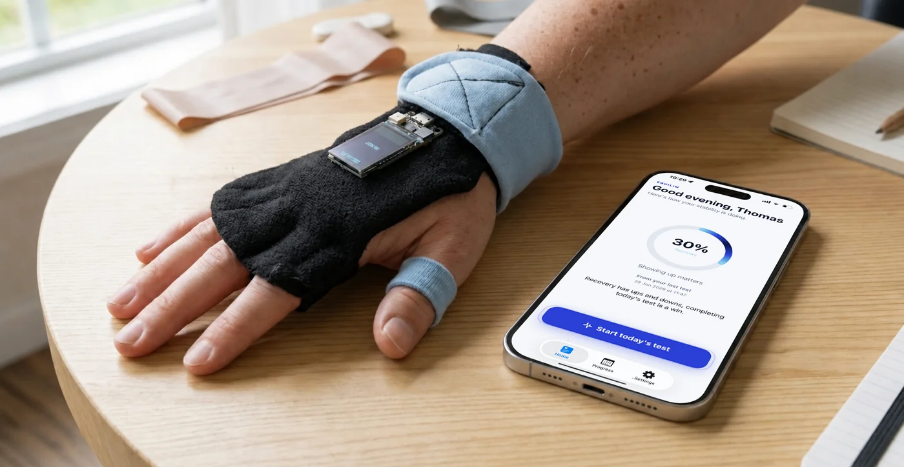
Short description
Parkinson’s patients who undergo DBS need to see whether the surgery is helping, and their clinicians need objective data on how motor stability changes before and after the operation. Equilim turns a small wearable sensor and an iPhone into a home measurement tool. Each day the patient holds the sensor still for thirty seconds; on-device signal processing turns that into a single 0–100 stability score. The patient sees a calm, encouraging view that is built to never discourage, while the clinician opens a separate dashboard with the full picture: raw waveforms, a before-and-after comparison around the surgery date, a day-by-day calendar, automatic detection of invalid tests, and the ability to flag a test with a note delivered straight back to the patient.
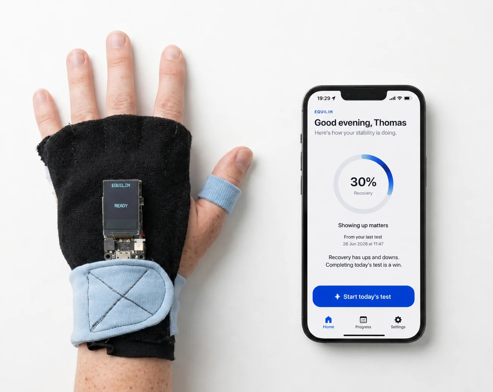
Tech stack
An ESP32-S sensor with an IMU streams motion over BLE to a SwiftUI iPhone app. A Supabase backend (Postgres with row-level security and auth) sits between the app and a Next.js web dashboard, joined by two fixed data contracts.
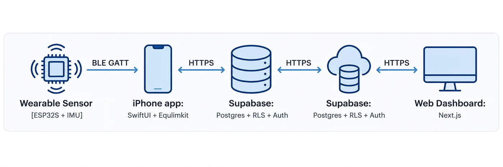
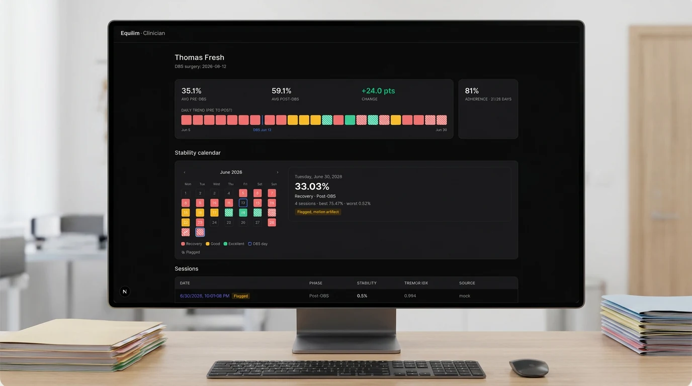
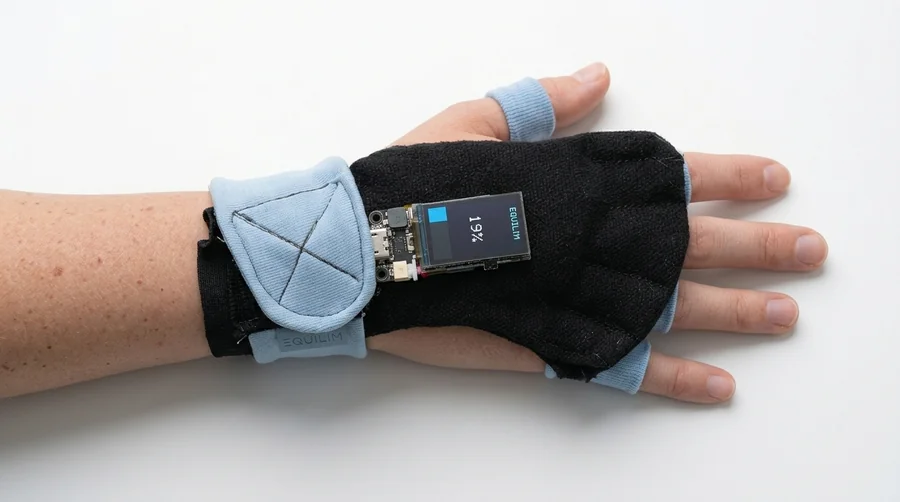
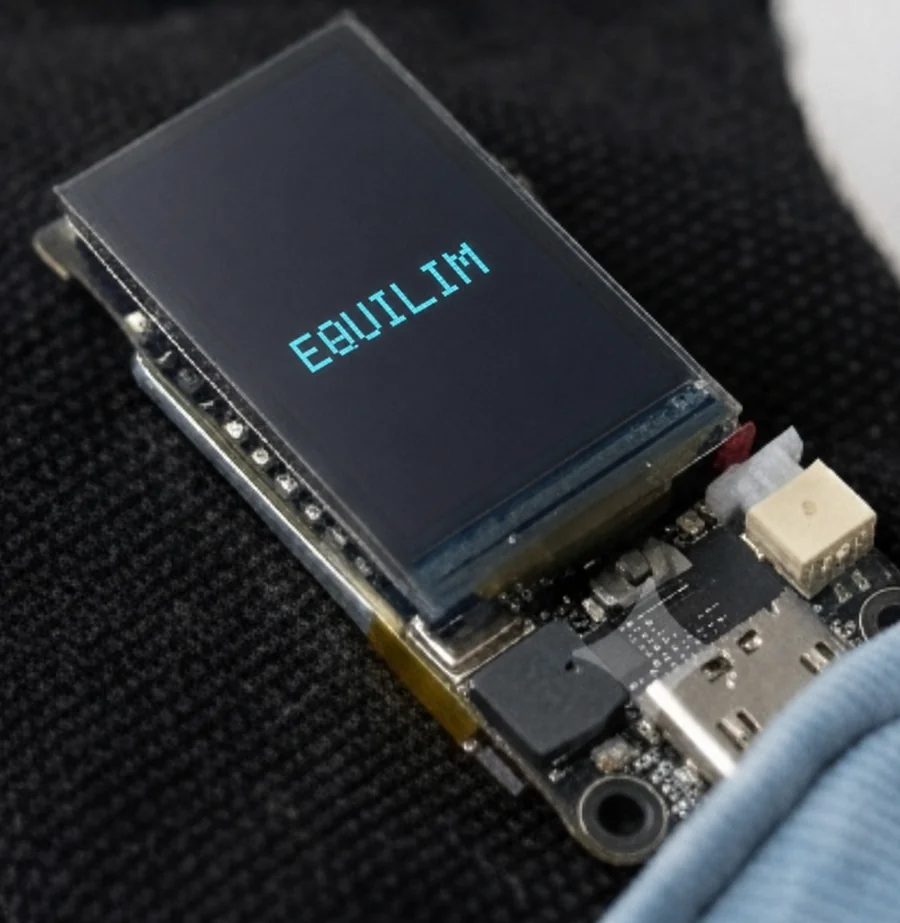
Designing the patient side as a calm ritual
The hardest design constraint here was emotional, not technical. Someone measuring their own recovery every day is fragile to discouragement, so the patient app is built so that it structurally cannot discourage. Every line of patient-facing text passes through a single module that can only phrase things supportively, so a dip becomes “Recovery has ups and downs, completing today’s test is a win.” The colour system is all blue, never red, so the lowest band reads as calm rather than as failure. The whole interaction is built for unsure, older hands: one large button on the Home screen instead of hidden in a tab, generous spacing, big type, and headers that stay in place so nothing jitters between screens. When the clinician leaves a note it surfaces here too, and a request to retake the test appears as a clear, dismissable card.
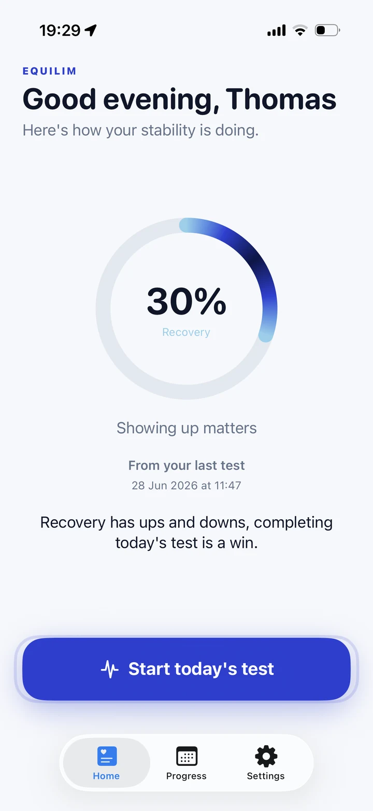
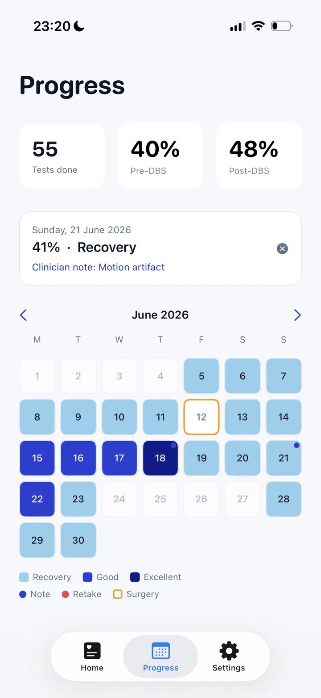
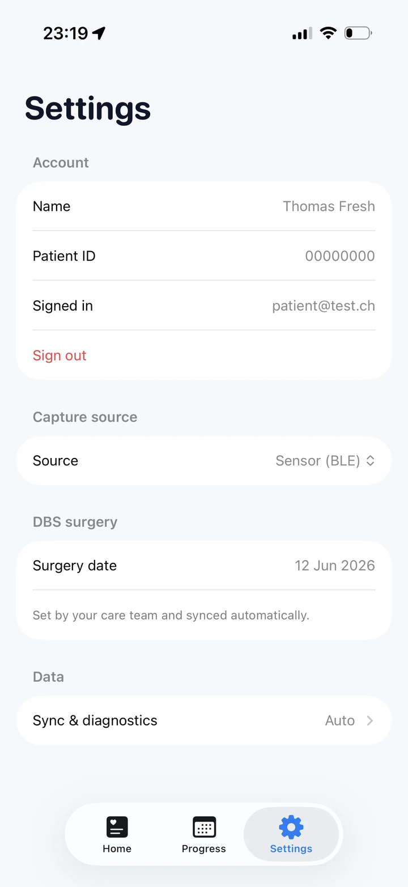
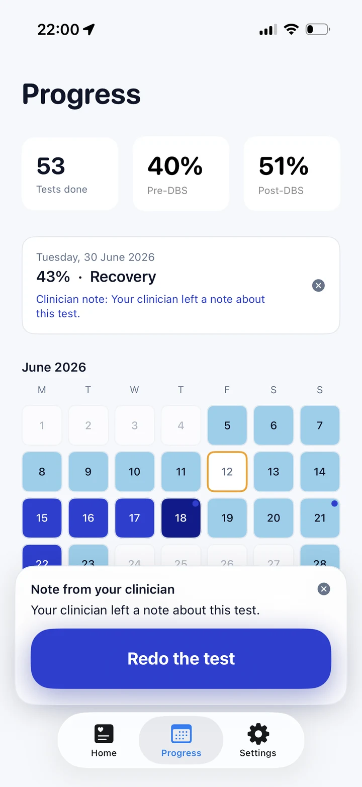
Thirty seconds
The test itself is a water orb that slowly fills over thirty seconds with no live number at all, because watching a score climb in real time would turn a measurement into a performance and add pressure. A ring around the orb reacts gently to movement, so it still feels alive without judging. When the test ends, the screen blooms into a soft blue glow with a short, personal thank-you while the data is analysed in the background. The reward is warmth, not a verdict.
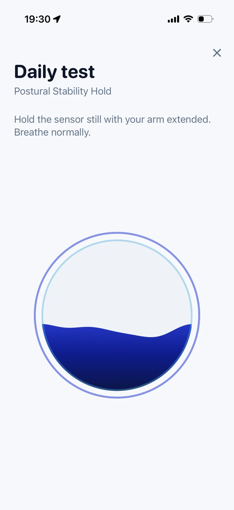
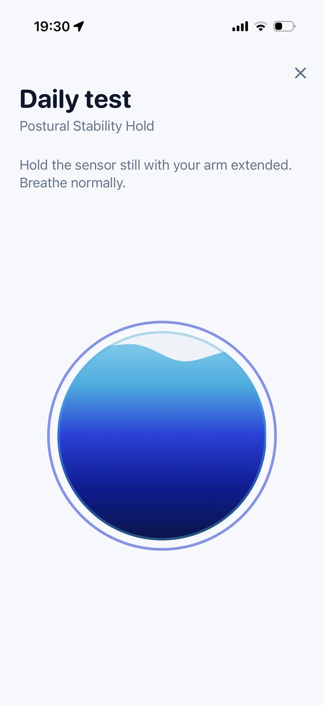
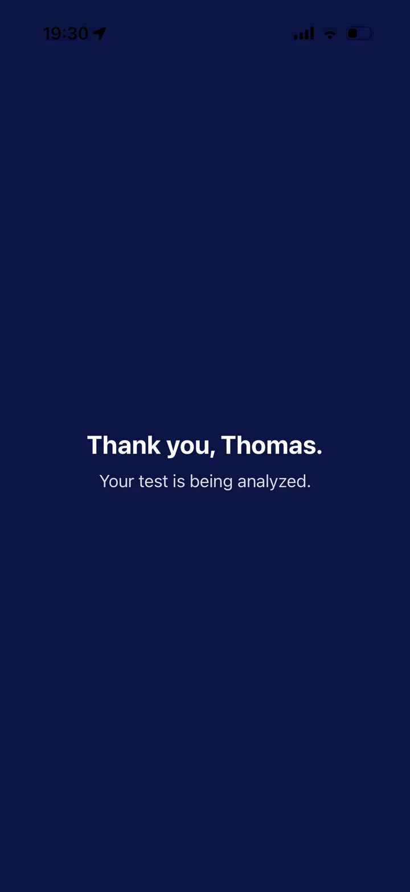
The clinician’s view
The clinician dashboard is the opposite of the patient app on purpose. Where the patient sees calm and encouragement, the clinician sees everything: the average stability before and after surgery and the change between them, a day-by-day trend with the operation marked on it, an adherence figure, and a full calendar anchored on the DBS date. Selecting a day reveals its score, band and number of sessions. The colour language here is clinical, with red, amber and green, and the whole surface follows the clinician’s own light or dark system setting. It is a tool for reading an outcome over weeks, not a daily nudge.
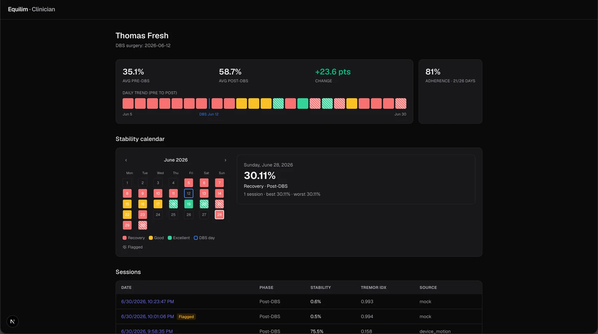
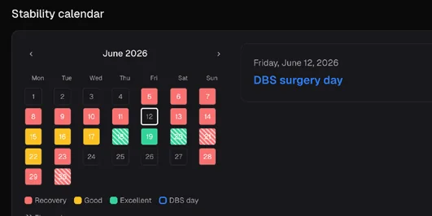
Turning noise into a message
A single test can be ruined by one large movement, for example lifting the hand, which would otherwise read as a misleadingly high score. Equilim detects that automatically and warns the clinician where in the recording it happened, turning a noisy line into an actionable signal. The clinician can then flag the test, write a short note, and optionally request a retake. That message travels straight back to the patient: the note appears on their Home screen, the affected day is marked on their calendar, and if a retake was requested they get a clear button to redo the test. Once they do, the request quietly resolves itself on both sides. This is the loop that makes the data trustworthy and keeps the patient in gentle contact with their care team.
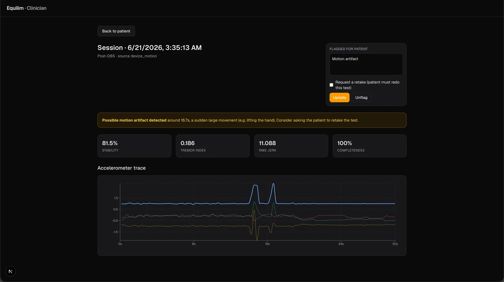
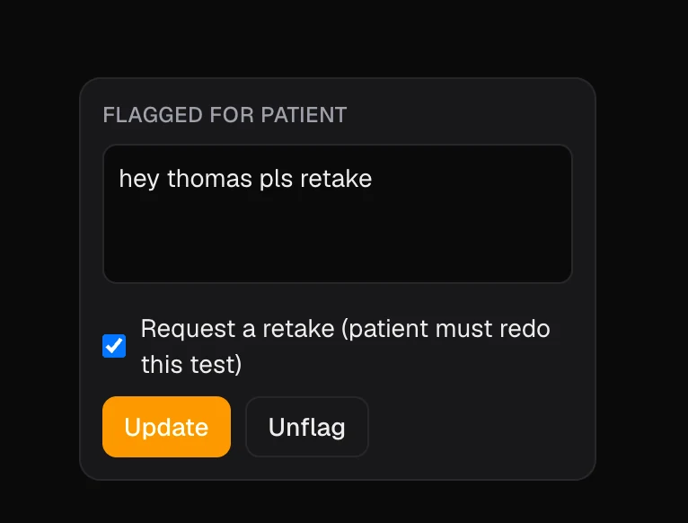
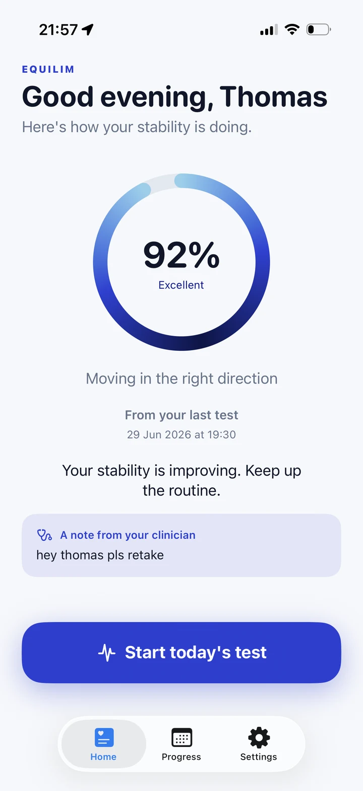
Version 01 — the origin
Equilim grew out of Parkinson’s Motion Monitor, a 2025 browser prototype. A sensor streamed raw motion (acceleration, gyroscope, orientation) over the network to a web page that rendered it as a 3D cube, which turned pink and shook to show tremor, next to a live stability test and a progress calendar. It proved the idea that everyday motion could become a picture of recovery, but it was raw and technical: one screen for everyone, exposed telemetry, no backend or privacy, and no split between what a patient needs and what a clinician needs.
The rebuild split it into a calm patient app and a clinician dashboard on a real, privacy-scoped backend, turned the shaking cube into one gentle score and a recovery calendar, and made every patient-facing word encourage, never alarm. Parkinson’s Motion Monitor became Equilim.
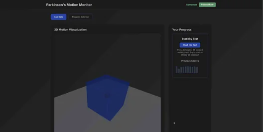
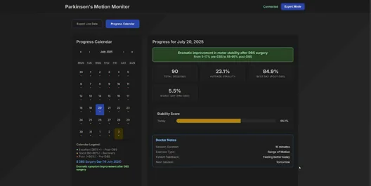
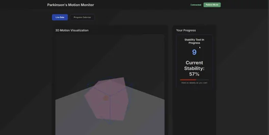
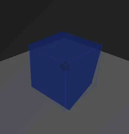
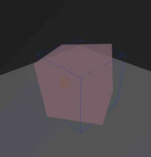
Conclusion
The iteration rethought all of that. The one technical screen became two purpose-built products: a calm, encouraging patient app on the phone and a detailed clinician dashboard on the web. The raw 3D cube became a single, gentle stability score and a recovery calendar anchored on the surgery date. A real backend was added with proper access control, so a patient only sees their own data and a clinician only sees patients who have consented. The sensor became a self-contained wearable with its own screen, and the experience was rebuilt around the people who use it, with positive-only language, a never-red palette, and a clinician-to-patient feedback loop. The rename from Parkinson’s Motion Monitor to Equilim reflects that shift, from a clinical instrument named after a disease to a calmer companion named for balance.
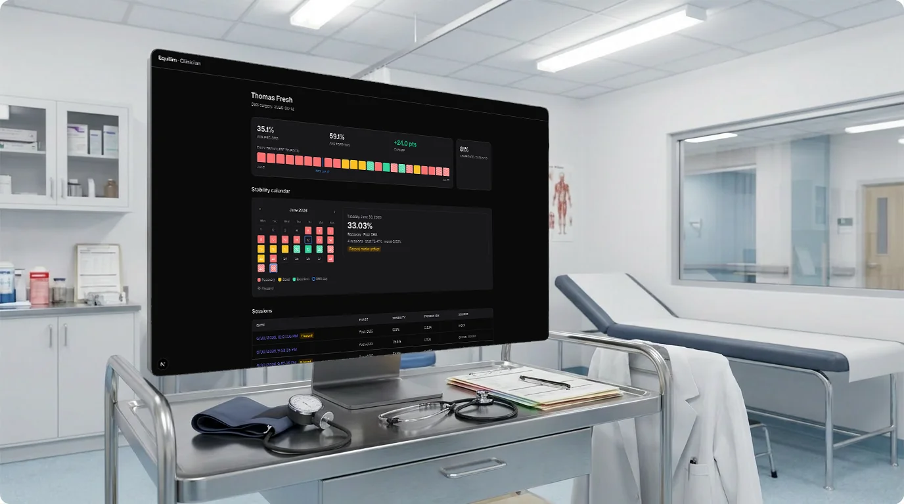